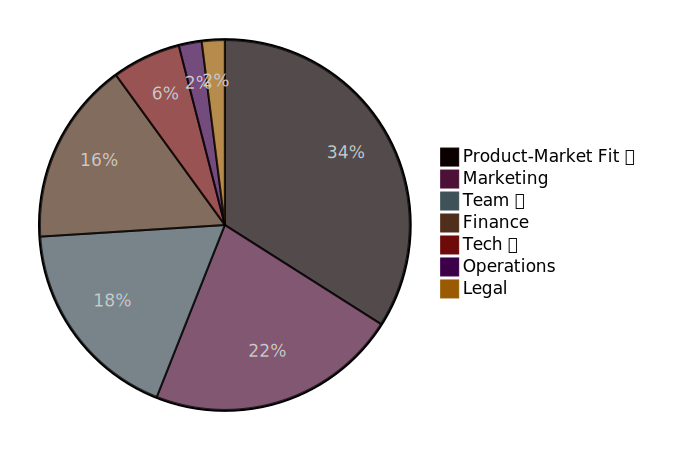
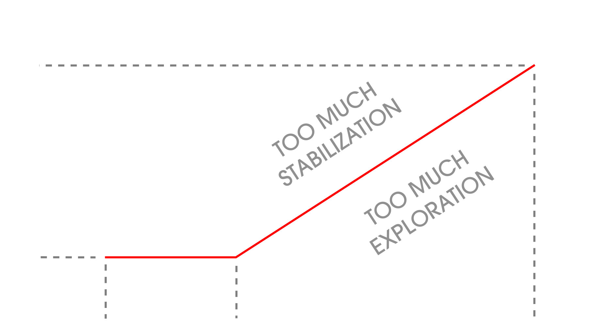

<!-- copy to backup stick --> <!-- upload to github --> <!-- generate pdf --> <!-- .slide: data-background="./media/title_bg.png" --> ### Balancing # Exploration vs # Stabilization ### in tech startups <small><small>Jonas Schlagenhauf - 2024-05-13 - [github.com/schlagenhauf/ece_talk_2024](https://github.com/schlagenhauf/ece_talk_2024)</small></small> --- # Preview What is the dilemma?<br> Why exploration vs stabilization? Note: exploration: to know what to build, what users want<br> stabilization is for finished product<br> overengineering<br> no easy answer --- ### Outline > "Stuff that no one told me" * 🚀 Motivations to found a startup * 💀 Why startups fail * 💡 **Exploration vs Stabilization** * 🗃 Random advice Note: Talk is about inner workings of organization<br> --- ### About Me * B.Sc & M.Sc Embedded System Engineering<br> <small>`2010-2016`</small> * Kiteswarms - Founding Member, CTO<br> <small> `2017-2021`, 💰 Business Angel, 👤22 </small> * Goodmotion - "Consultant"<br> <small>`2021`, 💰 Funding Programs & Competitions, 👤4 </small> * Infrafon - CEO<br> <small>`2022`, 💰 Business Angel, 👤4</small> * B.Braun New Ventures - Robotics Engineer<br> <small>`2023-now`, 💰 Corporate Startup, 👤55</small> Note: flat hierarchies ---- ### Reasons to found a startup * Avoid entering the work force after graduation * Money (9/10 startups fail, 1/100 unicorn) * See your idea get big * **Self actualization** Note: self-actualization is a powerfull driver if money or no real drive, my advice is wrong if money is your motivation, then you can do a lot more bullshit ---- #### Why do startups fail? <!--```mermaid pie title "Product-Market Fit ❗" : 34 "Marketing" : 22 "Team ❗" : 18 "Finance" : 16 "Tech ❗" : 6 "Operations" : 2 "Legal" : 2 ```-->  <small><small> https://www.failory.com/blog/startup-failure-rate#6-reasons-why-startups-fail </small></small> Note: numbers are not reliable, more of a hint org dev is not on the chart, but affects PMF, team and tech <!-- pre-render image --> --- ### Exploration vs Stabilization * Startups are fragile<br> → You need to reduce risk<br> → Risk is equivalent to uncertainty<br> → Build stuff, throw it at the user, learn, reduce uncertainty * But: Only prototyping creates its own risk<br> → No common basis, technological debt<br> → Worst case: complete stand-still Note: explain again exploration, stabilization ---- ### Stabilization over time <small>(simplified)</small>  Note: mention simplification, environment may change, pivot <!-- create plot --> ---- ### Adjust when necessary * Be sensible to inefficiencies * Too rigid → loosen structures<br> > <small>"Ditch custom PCB iterations, back to Arduino"</small><br> <small>"Are scalable and reproducible Kubernetes deployments really required already?"</small> * Too chaotic → find the most central element, nail it down<br> > <small>"Let's not have 5 custom logging mechanisms"</small> * Try not to overshoot, make small adjustments ---- ### Prototype or Product? * Get clear on expectations! * Either you prototype or you build components of your product <br> → Prototype: Take all the shortcuts you can to achieve your learning <br> → Product: Do it proper the first time. It only gets worse. * Don't let your prototype become your product * Be rigorous Note: adjustments are reactions, this is proactive ---- ### Radical Minimalism * Single sources of truth * Maximize integration among tools * Keep it simple as long as possible (KISS & YAGNI) * Plain text wherever you can * Ulysses pact: tie yourself to the mast <!-- improve formatting --> ---- ### Throwawayability * Prototypes should be discardable with no cost * Throwing away product components should be quite easy * Also (and especially) applies to infrastructure Note: metric i set up at Kiteswarms goes a bit against stabilization generally good design advice. forces clean interfaces, thinking ahead --- ### Unsorted advice * ~~💡~~ Your idea is not as valuable as you think * 🫂 Learn to trust your team * 👴 You will need senior people * ❤️ Work on your social skills * 📋 Use a personal task management system * 🎯 Focus is crucial * 💥 Burnout is real ---- ### Further reading <small> Lean Startup<br><small>Eric Ries, about reducing uncertainty</small><br> Reinventing Organizations<br><small>Frederic Laloux, about utopic ways of working</small><br> Extreme Programming<br><small>realistic agile software development</small><br> The Unofficial Project Manager<br><small>Kory Kogon et al., about classic project management</small><br> Getting Things Done<br><small>David Allen, about personal task management</small><br> Paul Graham's Essays<br><small>Co-Founder of YCombinator, best startup advice out there</small> </small> --- ### Happy founding